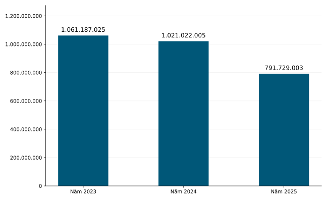
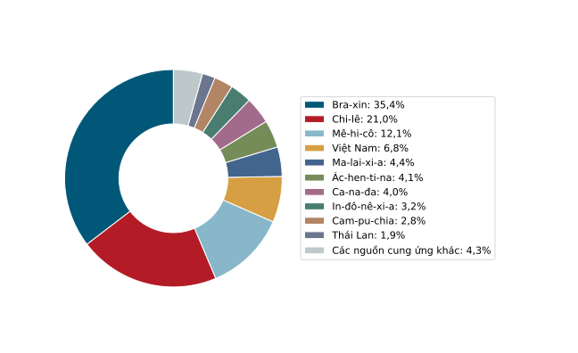
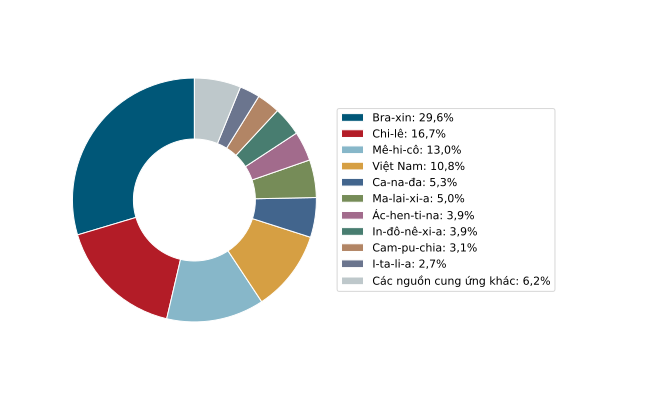
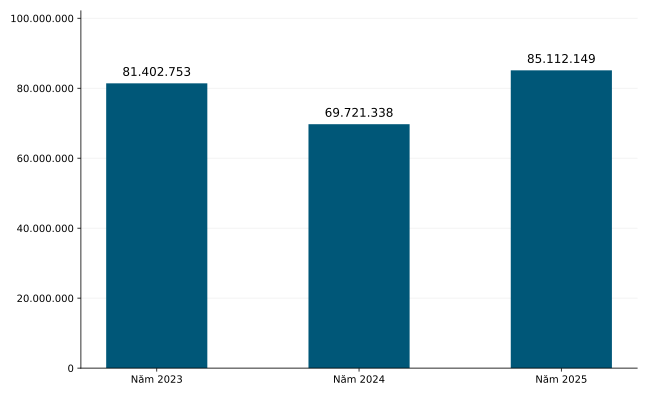
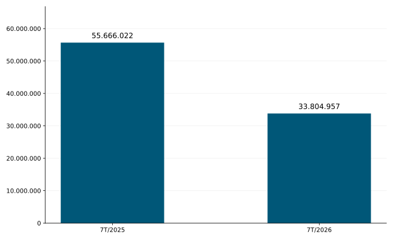

EAEU công bố Báo cáo kết quả điều tra sơ bộ vụ việc tự vệ đối với tôn thiếc nhập khẩu
Ngày 31 tháng 8 năm 2026, Cục Bảo vệ thị trường nội địa thuộc Ủy ban Kinh tế Á - Âu (EEC) ban hành Thông báo số 2026/509/SG13 về việc công bố Báo cáo kết quả điều tra sơ bộ vụ việc điều tra áp dụng biện pháp tự vệ đối với tôn thiếc nhập khẩu vào lãnh thổ Liên minh Kinh tế Á - Âu (EAEU).
Sản phẩm bị điều tra là thép cán phẳng từ sắt hoặc thép không hợp kim, có chiều rộng từ 600 mm trở lên, độ dày dưới 0,5 mm, được mạ hoặc phủ bằng lớp kim loại có hàm lượng thiếc từ 97% trọng lượng trở lên, thuộc mã HS EAEU 7210 12 200 0. Cuộc điều tra được khởi xướng ngày 4 tháng 3 năm 2026 trên cơ sở đơn yêu cầu của Công ty TNHH Metaloprokatnaya Kompaniya và được Công ty cổ phần Magnitogorsk Iron and Steel Works (MMK) ủng hộ. Bộ Công Thương Việt Nam nằm trong danh sách cơ quan có thẩm quyền của nước xuất khẩu được EEC thông báo về việc khởi xướng vụ việc.
Theo Báo cáo sơ bộ, EEC cho rằng lượng nhập khẩu tôn thiếc vào EAEU gia tăng do những diễn biến không lường trước được, trong đó có tình trạng dư thừa công suất sản xuất thép toàn cầu và sự gia tăng các biện pháp hạn chế thương mại tại các thị trường thứ ba. EEC dẫn số liệu OECD cho biết công suất dư thừa của ngành thép toàn cầu đạt khoảng 640,3 triệu tấn năm 2025 và dự kiến tăng lên 744,7 triệu tấn vào năm 2028. Trung Quốc là nguồn cung chủ yếu sản phẩm bị điều tra, chiếm khoảng 93-100% tổng lượng nhập khẩu vào EAEU trong năm 2025.
EEC đồng thời cho rằng sự gia tăng nhập khẩu đã gây thiệt hại nghiêm trọng cho ngành sản xuất EAEU, thể hiện qua sự suy giảm về sản lượng, doanh số, thị phần, giá bán, lợi nhuận và khả năng sinh lời, đặc biệt trong quý III và quý IV năm 2025. Trên cơ sở đó, EEC đề xuất áp dụng thuế tự vệ đặc biệt ở mức 25,2% trong 3 năm, giảm 1 điểm phần trăm sau mỗi năm, cao hơn mức thuế nhập khẩu thông thường 5% hiện hành.
Về việc loại trừ các nước đang phát triển và kém phát triển, EEC cho biết nước được loại trừ phải thuộc danh sách hưởng Hệ thống ưu đãi thuế quan thống nhất của EAEU, đồng thời có thị phần nhập khẩu không quá 3% và tổng thị phần của các nước thuộc diện này không quá 9%. Theo tiêu chí của EEC, Việt Nam không thuộc diện được loại trừ, cùng với một số nước như Ấn Độ, Ma-lai-xi-a, Mê-hi-cô và Thổ Nhĩ Kỳ.
Các bên tham gia điều tra có thể gửi ý kiến bình luận đối với Báo cáo kết quả điều tra sơ bộ chậm nhất ngày 14 tháng 9 năm 2026. Ý kiến phải được lập bằng tiếng Nga, kèm bản mật và bản công khai, ghi rõ số vụ việc SG-13 và tên hàng hóa tôn thiếc.
Cục Phòng vệ thương mại khuyến nghị các doanh nghiệp sản xuất, xuất khẩu tôn thiếc sang thị trường EAEU nghiên cứu Báo cáo, chủ động gửi ý kiến đến EEC trong thời hạn quy định nếu có liên quan, đồng thời theo dõi sát diễn biến vụ việc và phối hợp với Cục Phòng vệ thương mại trong quá trình xử lý vụ việc.
TIN TRONG NƯỚC
Bộ Công Thương áp dụng thuế chống bán phá giá chính thức đối với một số sản phẩm gạch gốm, sứ ốp lát có xuất xứ từ Cộng hòa Ấn Độ
Ngày 07 tháng 9 năm 2026, Bộ Công Thương ban hành Quyết định số 2174/QĐ-BCT về việc áp dụng thuế chống bán phá giá (CBPG) chính thức đối với một số sản phẩm gạch gốm, sứ ốp lát có xuất xứ từ Cộng hòa Ấn Độ. Theo đó, mức thuế CBPG áp dụng đối với hàng hóa bị điều tra từ Ấn Độ từ 5,55% đến 45,30%.
Trong quá trình điều tra, Bộ Công Thương đã phối hợp với các đơn vị liên quan xem xét, đánh giá các yếu tố theo quy định của pháp luật về quản lý ngoại thương, trong đó có mức độ bán phá giá của các doanh nghiệp sản xuất, xuất khẩu Ấn Độ và tác động của hàng hóa nhập khẩu đối với ngành sản xuất trong nước.
Kết luận điều tra cuối cùng xác định có hành vi bán phá giá đối với hàng hóa bị điều tra có xuất xứ từ Ấn Độ; có bằng chứng rõ ràng về việc hàng hóa này đe dọa gây thiệt hại đáng kể cho ngành sản xuất trong nước; đồng thời, có mối quan hệ nhân quả giữa hành vi bán phá giá và nguy cơ gây thiệt hại đáng kể đối với ngành sản xuất trong nước.
Trên cơ sở kết quả điều tra, Bộ Công Thương quyết định áp dụng thuế CBPG chính thức đối với một số sản phẩm gạch gốm, sứ ốp lát có xuất xứ từ Cộng hòa Ấn Độ với mức thuế từ 5,55% đến 45,30%.
Mức thuế CBPG có thể được rà soát, điều chỉnh trên cơ sở hồ sơ yêu cầu của các bên liên quan theo quy định của pháp luật, nhằm bảo đảm biện pháp được áp dụng đúng đối tượng, đúng mức độ và trong thời gian hợp lý.
TIN TRONG NƯỚC
Tiếp nhận hồ sơ đề nghị miễn trừ thuế chống bán phá giá đối với gạch gốm, sứ ốp lát có xuất xứ từ Ấn Độ
Ngày 07 tháng 9 năm 2026, Bộ Công Thương ban hành Quyết định số 2174/QĐ-BCT về việc áp dụng thuế chống bán phá giá (CBPG) chính thức đối với một số sản phẩm gạch gốm, sứ ốp lát có xuất xứ từ Cộng hòa Ấn Độ (vụ việc AD23).
Sản phẩm thuộc đối tượng áp dụng thuế CBPG là một số loại gạch gốm, sứ ốp lát có độ hút nước không vượt quá 0,5% tính theo trọng lượng, bao gồm gạch ốp tường, gạch lát nền, gạch lát đường và các sản phẩm tương tự, được phân loại theo các mã HS 6907.21.21; 6907.21.22; 6907.21.23; 6907.21.24; 6907.21.91; 6907.21.92; 6907.21.93 và 6907.21.94.
Theo khoản 2 Điều 12 Thông tư số 26/2025/TT-BCT ngày 15 tháng 5 năm 2025 của Bộ trưởng Bộ Công Thương, hàng hóa nhập khẩu bị áp dụng biện pháp phòng vệ thương mại có thể được xem xét miễn trừ nếu thuộc một trong các trường hợp theo quy định, như ngành sản xuất trong nước không sản xuất được; hàng hóa có đặc điểm khác biệt và không thể thay thế bằng hàng hóa sản xuất trong nước; là sản phẩm đặc biệt; hàng hóa tương tự hoặc cạnh tranh trực tiếp không được bán trên thị trường trong nước trong điều kiện thông thường; hoặc phục vụ mục đích nghiên cứu, phát triển và các mục đích phi thương mại khác.
Căn cứ Điều 16, Điều 17 và Điều 18 Thông tư số 26/2025/TT-BCT, Cục Phòng vệ thương mại thông báo để các doanh nghiệp có nhu cầu xem xét nộp Hồ sơ đề nghị miễn trừ áp dụng thuế CBPG chính thức trong vụ việc AD23 theo quy định.
Doanh nghiệp gửi Hồ sơ đề nghị miễn trừ, bao gồm các tài liệu theo quy định tại Điều 16 và Phụ lục II Thông tư số 26/2025/TT-BCT, tới Cổng Dịch vụ công trực tuyến của Bộ Công Thương tại https://dichvucong.moit.gov.vn hoặc trực tiếp tới Cục Phòng vệ thương mại.
TIN TRONG NƯỚC
Cục Phòng vệ thương mại tổ chức Diễn đàn Phòng vệ thương mại năm 2026
Ngày 18 tháng 9 năm 2026, tại thành phố Hải Phòng, Cục Phòng vệ thương mại, Bộ Công Thương sẽ tổ chức Diễn đàn Phòng vệ thương mại năm 2026 với chủ đề “Thúc đẩy năng lực sản xuất quốc gia – Kiến tạo động lực cho tăng trưởng”.
Trong bối cảnh kinh tế, thương mại quốc tế tiếp tục diễn biến nhanh và phức tạp, xu hướng gia tăng bảo hộ thương mại, cạnh tranh chiến lược, dư thừa công suất và dịch chuyển chuỗi cung ứng đang đặt ra nhiều vấn đề mới đối với các nền kinh tế và cộng đồng doanh nghiệp. Việc bảo vệ thị trường trong nước, củng cố năng lực sản xuất và nâng cao sức cạnh tranh của doanh nghiệp vì vậy ngày càng trở nên quan trọng.
Trong bối cảnh đó, phòng vệ thương mại tiếp tục là một trong những công cụ quan trọng nhằm góp phần duy trì môi trường cạnh tranh công bằng, bảo vệ hợp lý ngành sản xuất trong nước trước các hành vi cạnh tranh không công bằng hoặc sự gia tăng đột biến của hàng hóa nhập khẩu. Đồng thời, việc nâng cao năng lực về phòng vệ thương mại cũng giúp doanh nghiệp Việt Nam chủ động phòng ngừa, ứng phó hiệu quả hơn với các vụ việc điều tra phòng vệ thương mại tại thị trường xuất khẩu.
Tiếp nối thành công của Diễn đàn Phòng vệ thương mại các năm 2024 và 2025, Diễn đàn năm 2026 được tổ chức nhằm tạo không gian trao đổi giữa các cơ quan quản lý nhà nước, địa phương, hiệp hội ngành hàng, chuyên gia và cộng đồng doanh nghiệp về những xu hướng mới của thương mại quốc tế cũng như vai trò của các công cụ phòng vệ thương mại trong giai đoạn mới.
Tại Diễn đàn, các đại biểu dự kiến sẽ tập trung trao đổi, thảo luận về những diễn biến mới của thương mại và phòng vệ thương mại trên thế giới; các thách thức đặt ra từ xu hướng bảo hộ thương mại, dư thừa công suất và dịch chuyển chuỗi cung ứng; đồng thời đề xuất các giải pháp phát huy hiệu quả hơn vai trò của phòng vệ thương mại trong bảo vệ thị trường trong nước, củng cố các ngành sản xuất nền tảng và nâng cao năng lực cạnh tranh của nền kinh tế.
Thông qua các phiên thảo luận và hội thảo chuyên đề, Diễn đàn cũng hướng tới tăng cường kết nối giữa cơ quan quản lý nhà nước với địa phương, hiệp hội và doanh nghiệp; thúc đẩy chia sẻ thông tin, kinh nghiệm và nâng cao năng lực sử dụng công cụ phòng vệ thương mại của doanh nghiệp Việt Nam.
Thông tin Diễn đàn Phòng vệ thương mại năm 2026:
Thời gian: Thứ Sáu, ngày 18 tháng 9 năm 2026.
Diễn đàn chính: 08h30 – 11h30.
Hội thảo chuyên đề: 14h00 – 16h30.
Địa điểm: Phòng Ballroom 1+2, Tầng 5, Khách sạn Pullman Hải Phòng Grand Hotel, số 12 Trần Phú, thành phố Hải Phòng.
Thời hạn đăng ký: Trước ngày 15 tháng 9 năm 2026 thông qua mã QR của Ban Tổ chức.
TIN NƯỚC NGOÀI
Mê-hi-cô khởi xướng điều tra chống bán phá giá đối với sản phẩm thép tấm có xuất xứ từ Nhật Bản
Ngày 2/9/2026, Bộ Kinh tế Mê-hi-cô quyết định khởi xướng điều tra chống bán phá giá đối với sản phẩm thép tấm cán nóng, không hợp kim, không mạ hoặc phủ, có xuất xứ từ Nhật Bản.
Phạm vi sản phẩm điều tra là thép tấm cán nóng, không hợp kim, không mạ hoặc phủ, có độ dày từ 4,75 mm trở lên và chiều rộng từ 600 mm trở lên thuộc các mã HS 7208.51.04 và 7208.52.01. Theo quyết định khởi xướng, kể từ ngày 1/1/2026, các sản phẩm thuộc các mã HS nêu trên chịu mức thuế nhập khẩu 35%.
Vụ việc được khởi xướng trên cơ sở đơn yêu cầu của Grupo Acerero S.A. de C.V. nộp ngày 21/4/2026. Trong đơn, nguyên đơn cáo buộc sản phẩm thuộc phạm vi điều tra có xuất xứ từ Nhật Bản được nhập khẩu vào Mê-hi-cô với giá bán phá giá, gây thiệt hại đáng kể cho ngành sản xuất trong nước. Trên cơ sở rà soát các thông tin và chứng cứ do nguyên đơn cung cấp, Bộ Kinh tế Mê-hi-cô xác định có đủ cơ sở để khởi xướng điều tra chống bán phá giá.
Theo Bộ Kinh tế Mê-hi-cô, lượng nhập khẩu thép tấm có xuất xứ từ Nhật Bản tăng đáng kể trong giai đoạn 2023–2025, với mức tăng khoảng 35 lần. Riêng năm 2024, lượng nhập khẩu tăng 21% so với năm 2023 và tiếp tục tăng 61% trong năm 2025. Cùng với đó, thị phần của sản phẩm có xuất xứ từ Nhật Bản trong tổng lượng thép tấm nhập khẩu vào Mê-hi-cô tăng từ 0,2% năm 2023 lên 8,3% năm 2025. Tỷ trọng trong tổng lượng tiêu thụ thép tấm của thị trường Mê-hi-cô cũng tăng từ 0,1% năm 2023 lên 4,5% năm 2025.
Trong khi đó, thị trường thép tấm Mê-hi-cô có xu hướng giảm trong giai đoạn 2023–2025. Lượng tiêu thụ nội địa biểu kiến (CNA) giảm 29%, sản lượng trong nước giảm 31% và tổng lượng bán hàng của các nhà sản xuất trong nước giảm 32%. Riêng doanh số bán hàng tại thị trường nội địa giảm 30%. Công suất sử dụng của ngành sản xuất trong nước giảm từ 48% năm 2023 xuống 35% năm 2025.
Theo quyết định khởi xướng, Grupo Acerero và Ternium México là các nhà sản xuất trong nước sản xuất sản phẩm tương tự sản phẩm thuộc phạm vi điều tra. Grupo Acerero chiếm 56% tổng sản lượng trong nước trong thời kỳ xem xét và 62% trong năm 2025. Với sự tham gia của Ternium México trong đơn yêu cầu, đơn được xác định đáp ứng yêu cầu về đại diện cho ngành sản xuất trong nước.
Bên cạnh diễn biến nhập khẩu, Bộ Kinh tế Mê-hi-cô cũng xem xét năng lực sản xuất và khả năng xuất khẩu của ngành thép tấm Nhật Bản. Trong giai đoạn 2023–2025, công suất sản xuất thép tấm của Nhật Bản giảm 7%, từ 16,4 triệu tấn xuống 15,2 triệu tấn; sản lượng giảm từ 9,6 triệu tấn xuống 8,8 triệu tấn, trong khi tiêu thụ nội địa giảm từ 7,6 triệu tấn xuống 7,1 triệu tấn. Theo đánh giá của cơ quan điều tra, công suất chưa được sử dụng và khả năng xuất khẩu của Nhật Bản vẫn ở mức cao so với quy mô sản xuất và tiêu thụ của Mê-hi-cô.
Theo quyết định khởi xướng, thời kỳ điều tra bán phá giá là năm 2025, trong khi thời kỳ điều tra thiệt hại kéo dài từ tháng 1/2023 đến tháng 12/2025. Các bên liên quan có 23 ngày làm việc để xác lập tư cách tham gia vụ việc và nộp bản trả lời, lập luận, chứng cứ liên quan cho cơ quan điều tra.
Tổng hợp từ steelradar.com
TIN NƯỚC NGOÀI
EU khởi xướng rà soát giữa kỳ biện pháp chống bán phá giá đối với sản phẩm silicon kim loại nhập khẩu từ Trung Quốc
Ngày 01/9/2026, theo đề nghị của ngành sản xuất trong nước, Ủy ban châu Âu (EC) đã khởi xướng rà soát giữa kỳ đối với biện pháp chống bán phá giá đang áp dụng đối với sản phẩm silicon kim loại nhập khẩu từ Trung Quốc. Cuộc rà soát được tiến hành trên cơ sở đơn yêu cầu do Euroalliages, đại diện cho ngành sản xuất silicon kim loại của EU, nộp ngày 8/7/2026.
Cuộc rà soát sẽ xem xét liệu silicon kim loại nhập khẩu từ Trung Quốc có được xuất khẩu vào thị trường EU với mức giá thấp hơn giá trị thông thường hay không, qua đó có dấu hiệu bán phá giá hay không, đồng thời đánh giá liệu lượng hàng nhập khẩu này có gây thiệt hại đáng kể cho ngành sản xuất silicon kim loại của EU hay không.
Liên quan đến việc EC khởi xướng rà soát, ông Marco Levi, Tổng Giám đốc điều hành của Ferroglobe, cho rằng đây là bước tiến quan trọng nhằm góp phần khôi phục cạnh tranh công bằng trên thị trường silicon kim loại trọng yếu và có tính chiến lược của châu Âu. Theo ông Marco Levi, việc rà soát được tiến hành trên cơ sở các dữ liệu do ngành sản xuất cung cấp, trong đó có thông tin về các lô hàng silicon kim loại nhập khẩu vào EU.
Tổng hợp từ dig.watch
TIN NƯỚC NGOÀI
Thái Lan khởi xướng rà soát nhà xuất khẩu mới đối với sản phẩm nhôm định hình nhập khẩu từ Trung Quốc
Cục Ngoại thương Thái Lan đã khởi xướng rà soát nhà xuất khẩu mới đối với sản phẩm nhôm định hình nhập khẩu từ Trung Quốc. Các sản phẩm thuộc phạm vi rà soát bao gồm nhôm định hình được phân loại theo các mã HS sau: 7604.10.10.000, 7604.10.90.000, 7604.21.90.000, 7604.29.10.000, 7604.29.90.001, 7604.29.90.090, 7610.10.10.000, 7610.10.90.000. Cuộc rà soát được tiến hành trong bối cảnh sản phẩm nhôm định hình có xuất xứ từ Trung Quốc đang chịu thuế chống bán phá giá chính thức tại Thái Lan.
Vụ việc được khởi xướng trên cơ sở đơn đề nghị của Công ty Guangdong Shengyu Xingda Aluminum Profile Co., Ltd., nhà sản xuất nhôm định hình của Trung Quốc. Trong quá trình rà soát, cơ quan có thẩm quyền của Thái Lan yêu cầu doanh nghiệp đề nghị rà soát nộp tiền đặt cọc chống bán phá giá tạm thời 21,94%, được tính trên cơ sở giá CIF (chi phí, bảo hiểm và cước vận chuyển). Mức tiền đặt cọc tạm thời được áp dụng tối đa trong một năm hoặc cho đến khi cuộc rà soát kết thúc, tùy thời điểm nào đến trước.
Động thái trên được thực hiện sau khi Thái Lan áp dụng thuế chống bán phá giá chính thức đối với sản phẩm nhôm định hình nhập khẩu từ Trung Quốc, trên cơ sở kết luận cuối cùng khẳng định bán phá giá được ban hành vào tháng 11/2025. Các mức thuế chống bán phá giá được áp dụng trong thời hạn 5 năm, dao động từ 5,12% đến 21,94%, tùy thuộc vào nhà xuất khẩu.
Rà soát nhà xuất khẩu mới cho phép doanh nghiệp Trung Quốc có đơn đề nghị được xem xét mức thuế chống bán phá giá áp dụng riêng đối với doanh nghiệp trong khuôn khổ biện pháp hiện hành. Mức tiền đặt cọc chống bán phá giá tạm thời 21,94% trong cuộc rà soát này tương ứng với mức cao nhất trong khoảng thuế hiện đang áp dụng đối với sản phẩm nhôm định hình có xuất xứ từ Trung Quốc.
Tổng hợp từ alcircle.com
TIN NƯỚC NGOÀI
Ma-lai-xi-a khởi xướng điều tra chống bán phá giá đối với thép không gỉ cán nguội nhập khẩu từ In-đô-nê-xi-a
Ngày 9/9/2026, Bộ Đầu tư, Thương mại và Công nghiệp Ma-lai-xi-a (MITI) khởi xướng điều tra chống bán phá giá (Vụ việc AD 03/26) đối với sản phẩm thép không gỉ cán nguội, dưới dạng cuộn, tấm hoặc các dạng khác, có xuất xứ hoặc được xuất khẩu từ In-đô-nê-xi-a. Sản phẩm điều tra có mã HS: 7219.31, 7219.35, 7219.90 và 7220.20. Cuộc điều tra được tiến hành theo Mục 20 của Đạo luật về Thuế chống trợ cấp và Chống bán phá giá năm 1993.
Vụ việc được khởi xướng trên cơ sở đơn yêu cầu của Công ty Bahru Stainless Sdn. Bhd., có trụ sở tại bang Johor, đại diện cho ngành sản xuất trong nước của Ma-lai-xi-a.
Theo yêu cầu, nguyên đơn cáo buộc sản phẩm thuộc phạm vi điều tra được nhập khẩu từ In-đô-nê-xi-a với biên độ bán phá giá đáng kể và gây thiệt hại cho ngành sản xuất trong nước. Các dấu hiệu thiệt hại được viện dẫn gồm lượng nhập khẩu gia tăng, thị phần của ngành sản xuất trong nước giảm, giá nhập khẩu thấp hơn giá bán của sản phẩm trong nước, gây giảm giá và kìm hãm giá, doanh số bán hàng và công suất sử dụng giảm, cùng với tình trạng tồn kho gia tăng.
Các bên liên quan phải nộp bản trả lời bảng câu hỏi và ý kiến liên quan thông qua hệ thống TRIMA trong thời hạn 30 ngày kể từ ngày thông báo.
Tổng hợp từ news.metal.com
TIN NƯỚC NGOÀI
Trung Quốc áp dụng biện pháp chống bán phá giá đối với hóa chất sản xuất chất bán dẫn nhập khẩu từ Nhật Bản
Ngày 8 tháng 9 năm 2026, Trung Quốc áp dụng các biện pháp chống bán phá giá đối với dichlorosilane nhập khẩu từ Nhật Bản, một loại hóa chất được sử dụng trong sản xuất chất bán dẫn.
Bộ Thương mại Trung Quốc đã công bố các biện pháp sơ bộ đối với dichlorosilane nhập khẩu từ Nhật Bản, loại hóa chất cần thiết để xử lý các tấm silicon thành chip bán dẫn. Theo đó, các doanh nghiệp nhập khẩu sản phẩm này phải nộp tiền đặt cọc với mức cao nhất lên tới 99,2%.
Chánh Văn phòng Nội các Nhật Bản Minoru Kihara cho biết Nhật Bản sẽ xem xét kỹ các biện pháp của Trung Quốc, đánh giá tác động và phối hợp với các doanh nghiệp nhằm ngăn ngừa những ảnh hưởng tiêu cực đối với hoạt động kinh doanh.
Cổ phiếu của các doanh nghiệp Trung Quốc có liên quan đến sản xuất dichlorosilane đã tăng giá, dẫn đầu là Tangshan Sunfar Silicon Industry, với mức tăng 10% - mức tăng tối đa trong ngày trên thị trường chứng khoán Thượng Hải. Một công ty thuộc Tangshan Sunfar là bên đã nộp đơn yêu cầu dẫn đến việc Trung Quốc tiến hành điều tra chống bán phá giá.
Trong khi đó, cổ phiếu của Shin-Etsu Chemical, một doanh nghiệp Nhật Bản, giảm tới 1,5% tại thị trường Tokyo. Người phát ngôn của công ty cho biết Shin-Etsu Chemical đang xem xét các nội dung chi tiết trong thông báo của Trung Quốc. Theo doanh nghiệp này, các biện pháp trên sẽ không ảnh hưởng đến doanh thu và dichlorosilane chỉ chiếm một tỷ trọng nhỏ trong hoạt động kinh doanh của công ty.
Bắc Kinh và Tô-ki-ô đã vướng vào tranh chấp kể từ tháng 11 năm ngoái, sau khi Thủ tướng Nhật Bản Sanae Takaichi cho rằng Tô-ki-ô có thể triển khai lực lượng quân sự nếu Trung Quốc tìm cách kiểm soát Đài Loan, vùng lãnh thổ tự quản mà Bắc Kinh tuyên bố chủ quyền. Kể từ đó, Trung Quốc đã đưa ra một loạt biện pháp đáp trả, trong đó có cảnh báo người dân hạn chế đi du lịch Nhật Bản và tăng cường kiểm soát xuất khẩu đối với một số mặt hàng.
Bên cạnh đó, xuất khẩu đất hiếm của Bắc Kinh, là những nguyên liệu cần thiết để sản xuất nhiều sản phẩm công nghệ cao như máy bay chiến đấu và điện thoại thông minh cũng đã giảm trong năm nay.
Động thái mới nhất của Bắc Kinh được đưa ra trước chuyến thăm Hoa Kỳ dự kiến trong tháng này của Thủ tướng Takaichi. Lãnh đạo Trung Quốc Tập Cận Bình cũng có kế hoạch gặp Tổng thống Hoa Kỳ Donald Trump, với chuyến thăm Nhà Trắng dự kiến diễn ra vào ngày 24 tháng 9.
Nhật Bản là nước dẫn đầu thế giới về sản xuất dichlorosilane có độ tinh khiết siêu cao. Tuy nhiên, trong những năm gần đây, Trung Quốc đã tăng nhập khẩu hóa chất này từ Hàn Quốc, đưa Hàn Quốc trở thành nhà cung cấp lớn nhất cho Trung Quốc vào năm 2025. Theo số liệu hải quan, trong tháng 7, kim ngạch nhập khẩu dichlorosilane từ Nhật Bản đạt 2,6 triệu USD, chiếm khoảng một phần ba tổng kim ngạch nhập khẩu dichlorosilane của Trung Quốc.
Theo đơn yêu cầu ban đầu, công ty thuộc Tangshan Sunfar cho biết doanh nghiệp này chiếm hơn một nửa sản lượng dichlorosilane của Trung Quốc và sản lượng của công ty đang tiếp tục tăng.
Tổng hợp từ The Japan Times
TIN NƯỚC NGOÀI
Nam Phi đề xuất áp dụng thuế chống bán phá giá tạm thời đối với thép ống nhập khẩu từ Mô-dăm-bích
Cơ quan quản lý thương mại Nam Phi đã tiến hành các bước để áp dụng thuế chống bán phá giá (CBPG) tạm thời đối với một số sản phẩm thép ống nhập khẩu từ Mô-dăm-bích, sau khi xác định có bằng chứng cho thấy các sản phẩm này được bán phá giá vào thị trường Liên minh Hải quan miền Nam châu Phi (SACU), gây thiệt hại đáng kể cho các nhà sản xuất trong nước.
Trong kết luận sơ bộ, Ủy ban Quản lý Thương mại Quốc tế Nam Phi (ITAC) kết luận rằng các loại ống và ống thép hàn đường kính lớn nhập khẩu từ Mô-dăm-bích được bán vào thị trường SACU với giá bán phá giá, “gây thiệt hại đáng kể và đe dọa gây thiệt hại đáng kể cho ngành sản xuất SACU”.
Ủy ban đã kiến nghị Cục trưởng Cơ quan Thuế Nam Phi (SARS) áp dụng mức thuế CBPG tạm thời 28,86% đối với các sản phẩm thuộc phạm vi điều tra nhập khẩu từ nhà sản xuất Mô-dăm-bích ETG Steel Solutions Limitada, cũng như tất cả các nhà sản xuất và xuất khẩu khác của Mô-dăm-bích, trong thời hạn 6 tháng.
Vụ việc điều tra bao gồm các loại ống và ống thép có đường kính ngoài trên 406,4 mm, thường được gọi là ống hàn điện trở (ERW) và ống hàn xoắn hoặc ống hàn hồ quang chìm (SAW). Các sản phẩm này được phân loại theo phân nhóm thuế quan 7305.19.
Đơn yêu cầu điều tra do Hall Longmore nộp. ITAC xác định đây là nhà sản xuất lớn của các sản phẩm thuộc phạm vi vụ việc tại khu vực SACU, chiếm hơn 50% sản lượng. Ủy ban nhận thấy đơn yêu cầu đáp ứng các điều kiện để được xem là được nộp thay mặt cho ngành sản xuất SACU.
Theo Ủy ban, lượng nhập khẩu từ Mô-dăm-bích đã tăng mạnh trong những năm gần đây. Khối lượng nhập khẩu tăng từ 1,48 triệu kg năm 2023 lên 3,35 triệu kg năm 2024, sau đó tăng vọt lên hơn 12,2 triệu kg năm 2025. Đến năm 2025, hàng nhập khẩu từ Mô-dăm-bích chiếm 98% tổng lượng nhập khẩu các sản phẩm thuộc phạm vi vụ việc vào thị trường SACU.
ITAC nhận thấy sự gia tăng nhập khẩu diễn ra đồng thời với việc nhà sản xuất trong nước mất thị phần. Ủy ban lưu ý rằng lượng hàng nhập khẩu bán phá giá từ Mô-dăm-bích tăng đáng kể, trong khi thị phần của Hall Longmore giảm trong thời kỳ điều tra. Ủy ban cũng xác định lượng nhập khẩu từ Mô-dăm-bích đã tăng 729% trong giai đoạn 2024-2025.
Cuộc điều tra cũng cho thấy có bằng chứng về ép giá và kìm hãm giá. ITAC xác định giá nhập khẩu sau khi cập cảng của các sản phẩm thuộc phạm vi vụ việc thấp hơn giá bán trong nước trong suốt thời kỳ xem xét, đồng thời mức độ chênh lệch giá ngày càng gia tăng trong giai đoạn 2024-2025.
Ủy ban cũng kết luận rằng ngành sản xuất trong nước không có khả năng bù đắp chi phí sản xuất ngày càng tăng thông qua việc tăng giá bán. Lợi nhuận gộp giảm trong khi chi phí sản xuất tăng, cho thấy áp lực ngày càng lớn đối với các nhà sản xuất trong nước.
Trong quá trình điều tra, ITAC đã xem xét các ý kiến phản đối của ETG Steel Solutions và Capital Star Steel SA, trong đó các doanh nghiệp này phản đối một số nội dung liên quan đến việc tính toán biên độ phá giá và các bằng chứng được sử dụng trong giai đoạn khởi xướng điều tra. Các nhà xuất khẩu cho rằng một số số liệu thống kê nhập khẩu và tính toán giá chưa chính xác, đồng thời đặt vấn đề về tính bảo mật của một số thông tin do bên yêu cầu điều tra cung cấp.
Tuy nhiên, Ủy ban cho biết sau khi tiến hành xác minh, cơ quan này đã sử dụng thông tin thu thập được từ các nhà xuất khẩu, Tờ khai nhập khẩu (Bills of Entry) và hồ sơ của SARS làm những nguồn thông tin đáng tin cậy nhất hiện có.
ITAC cuối cùng xác định biên độ phá giá 28,86% đối với ETG Steel Solutions và áp dụng cùng mức biên độ này đối với tất cả các nhà xuất khẩu khác của Mô-dăm-bích.
Ủy ban cũng bác bỏ lập luận cho rằng việc áp dụng các biện pháp CBPG sẽ làm suy yếu các mục tiêu hội nhập khu vực trong khuôn khổ Cộng đồng Phát triển miền Nam châu Phi (SADC).
Mặc dù thừa nhận SADC thúc đẩy thương mại miễn thuế giữa các quốc gia thành viên, ITAC lưu ý rằng Nghị định thư Thương mại SADC cho phép áp dụng các biện pháp CBPG trong trường hợp có bằng chứng về hành vi bán phá giá và thiệt hại, phù hợp với các quy định của Tổ chức Thương mại Thế giới (WTO).
Trên cơ sở các kết quả điều tra, Ủy ban đưa ra kết luận sơ bộ rằng hành vi bán phá giá đối với các sản phẩm có xuất xứ hoặc nhập khẩu từ Mô-dăm-bích đang diễn ra và việc áp dụng các biện pháp tạm thời là cần thiết trong thời gian cuộc điều tra tiếp tục được thực hiện.
Tổng hợp từ Cape Times
TIN NƯỚC NGOÀI
Hoa Kỳ duy trì biện pháp chống bán phá giá và chống trợ cấp đối với ống thép hàn từ Hàn Quốc và Thổ Nhĩ Kỳ
Ngày 3 tháng 9 năm 2026, Bộ Thương mại Hoa Kỳ (DOC) ban hành kết luận cuối cùng rà soát cuối kỳ đối với các lệnh áp thuế chống bán phá giá (CBPG) đối với ống thép hàn nhập khẩu từ Hàn Quốc và Thổ Nhĩ Kỳ, đồng thời rà soát cuối kỳ đối với lệnh áp thuế chống trợ cấp (CTC) đối với sản phẩm tương tự nhập khẩu từ Thổ Nhĩ Kỳ.
DOC và Ủy ban Thương mại Quốc tế Hoa Kỳ (USITC) xác định rằng việc hủy bỏ các lệnh áp thuế nêu trên có khả năng dẫn đến tình trạng tiếp diễn hoặc tái diễn hành vi bán phá giá, trợ cấp có thể đối kháng và gây thiệt hại đáng kể cho ngành sản xuất Hoa Kỳ.
Trên cơ sở đó, DOC quyết định tiếp tục duy trì các lệnh áp thuế CBPG và CTC đối với các sản phẩm thuộc phạm vi vụ việc.
Theo kết quả rà soát, biên độ phá giá bình quân gia quyền đối với các doanh nghiệp Hàn Quốc lên tới 6,22%, trong khi mức biên độ phá giá đối với các doanh nghiệp Thổ Nhĩ Kỳ lên tới 22,95%.
Đối với biện pháp chống trợ cấp áp dụng với sản phẩm từ Thổ Nhĩ Kỳ, mức thuế suất trợ cấp được xác định là 152,98% đối với các doanh nghiệp Borusan Istikbal Ticaret, Borusan Mannesmann Boru Sanayi ve Ticaret A.S., Borusan Mannesmann Boru Yatirim Holding A.S. và Borusan Holding A.S.; và 1,31% đối với các doanh nghiệp Toscelik Profil ve Sac Endustrisi A.S., Tosyali Demir Celik Sanayi A.S., Tosyali Dis Ticaret A.S., Tosyali Elektrik Enerjisi Toptan Satis Ith. Ihr. A.S. và Tosyali Holding A.S.
Theo đó, các biện pháp CBPG đối với ống thép hàn từ Hàn Quốc và Thổ Nhĩ Kỳ, cùng biện pháp CTC đối với sản phẩm từ Thổ Nhĩ Kỳ, sẽ tiếp tục được duy trì.
Tổng hợp từ Steel Orbis
THÔNG TIN XUẤT NHẬP KHẨU
Cảnh báo đối với mặt hàng gỗ thanh và viền dải gỗ được tạo dáng liên tục xuất khẩu vào thị trường Hoa Kỳ
Mô tả mặt hàng gỗ thanh và viền dải gỗ được tạo dáng liên tục
Gỗ thanh và viền dải gỗ được tạo dáng liên tục (Wood mouldings, millwork products) là các sản phẩm gỗ được gia công từ gỗ tự nhiên hoặc gỗ đã qua xử lý, có dạng thanh, dải hoặc profile với chiều dài tương đối lớn, trong đó bề mặt và tiết diện của sản phẩm được tạo hình theo một biên dạng nhất định bằng phương pháp gia công liên tục. Nguyên liệu ban đầu có thể là gỗ xẻ, gỗ ghép, gỗ dán hoặc các loại vật liệu gỗ khác, được lựa chọn, phân loại theo chủng loại, kích thước, độ ẩm và chất lượng trước khi đưa vào gia công. Trong quá trình sản xuất, gỗ được cắt, xẻ, bào, phay, định hình hoặc tạo profile liên tục để hình thành các thanh hoặc dải gỗ có tiết diện và hình dạng đồng nhất theo thiết kế.
Đối với viền dải gỗ được tạo dáng liên tục, sản phẩm thường được tạo thành các dải gỗ có chiều rộng và độ dày tương đối nhỏ, được định hình liên tục dọc theo chiều dài, có thể có các dạng tiết diện phẳng, vuông, chữ nhật, bo tròn, vát cạnh, dạng rãnh, gờ hoặc các profile trang trí khác. Sau công đoạn tạo hình, sản phẩm có thể tiếp tục được chà nhám, xử lý bề mặt, phủ sơn, phủ dầu, nhuộm màu hoặc hoàn thiện bằng các phương pháp khác nhằm nâng cao độ nhẵn, tính thẩm mỹ, khả năng chống ẩm và độ bền trong quá trình sử dụng.
Đặc điểm quan trọng của nhóm sản phẩm này là hình dạng và tiết diện được duy trì tương đối đồng nhất theo chiều dài, được tạo ra thông qua quá trình gia công cơ khí liên tục thay vì chỉ thực hiện các thao tác cắt rời đơn giản. Tùy mục đích sử dụng, gỗ thanh và viền dải gỗ tạo dáng liên tục có thể được sử dụng trong sản xuất đồ nội thất, tủ, cửa, khung và các cấu kiện bằng gỗ, trang trí nội thất, hoàn thiện bề mặt, làm nẹp, viền cạnh, ốp tường, sàn, trần và các sản phẩm xây dựng hoặc trang trí khác. Về bản chất, giá trị của sản phẩm không chỉ nằm ở nguyên liệu gỗ mà còn phụ thuộc đáng kể vào quá trình tạo hình, gia công chính xác và hoàn thiện bề mặt, qua đó tạo ra sản phẩm có kích thước, hình dạng, chất lượng và tính năng phù hợp với mục đích sử dụng cụ thể.
Quy trình sản xuất gỗ thanh và viền dải gỗ được tạo dáng liên tục
Quy trình sản xuất gỗ thanh và viền dải gỗ được tạo dáng liên tục thường bắt đầu từ khâu lựa chọn và chuẩn bị nguyên liệu gỗ phù hợp với yêu cầu về chủng loại, kích thước, độ ẩm, độ bền và chất lượng bề mặt. Nguyên liệu có thể là gỗ tự nhiên hoặc các dạng vật liệu gỗ đã qua sơ chế như gỗ xẻ, gỗ ghép, gỗ dán tùy thuộc vào đặc tính và mục đích sử dụng của sản phẩm cuối cùng. Sau khi nhập nguyên liệu, gỗ được kiểm tra, phân loại và xử lý sơ bộ, loại bỏ các phần bị mục, nứt, cong vênh, mắt gỗ không phù hợp hoặc các khuyết tật có thể ảnh hưởng đến chất lượng sản phẩm. Tiếp đó, nguyên liệu được cắt hoặc xẻ thành các phôi gỗ có kích thước phù hợp với quy cách sản phẩm, đồng thời có thể được sấy hoặc điều chỉnh độ ẩm nhằm bảo đảm tính ổn định của gỗ trong quá trình gia công và sử dụng. Đây là công đoạn có ý nghĩa quan trọng vì độ ẩm và chất lượng của phôi gỗ có thể ảnh hưởng trực tiếp đến khả năng gia công, độ chính xác kích thước cũng như nguy cơ co ngót, cong vênh hoặc biến dạng của sản phẩm sau khi hoàn thiện.
Sau công đoạn chuẩn bị phôi, gỗ được đưa vào gia công tạo kích thước và hình dạng ban đầu. Phôi gỗ được cắt, xẻ, bào hoặc gia công trên các thiết bị chuyên dụng để đạt chiều dài, chiều rộng và chiều dày theo yêu cầu. Đối với gỗ thanh, công đoạn này nhằm tạo ra các thanh gỗ có kích thước tương đối đồng đều và bề mặt phẳng, trong khi đối với viền hoặc dải gỗ, phôi thường được gia công thành các dải có chiều rộng và độ dày phù hợp. Sau đó, sản phẩm được đưa qua công đoạn tạo dáng liên tục, trong đó phôi gỗ được đưa liên tục qua máy phay, máy định hình hoặc dây chuyền gia công profile để tạo ra tiết diện và biên dạng theo thiết kế. Tùy theo yêu cầu sử dụng, biên dạng có thể là dạng phẳng, vuông, chữ nhật, bo tròn, vát cạnh, tạo rãnh, tạo gờ hoặc các dạng profile trang trí phức tạp hơn. Điểm đặc trưng của công đoạn này là quá trình cắt gọt và định hình được thực hiện liên tục dọc theo chiều dài của phôi, giúp sản phẩm đạt được biên dạng tương đối đồng nhất, kích thước ổn định và độ chính xác cao. Đối với các loại viền dải gỗ có chiều rộng nhỏ hoặc hình dạng đặc thù, thiết bị định hình có thể được điều chỉnh để bảo đảm hình dạng của tiết diện được duy trì đồng đều trên toàn bộ chiều dài sản phẩm.
Sau khi tạo hình, gỗ tiếp tục trải qua công đoạn gia công tinh và xử lý bề mặt. Bề mặt sản phẩm được bào tinh, chà nhám hoặc đánh bóng để loại bỏ các vết dao, xơ gỗ, cạnh sắc và các khuyết điểm phát sinh trong quá trình tạo hình. Trong trường hợp cần thiết, các cạnh của thanh hoặc dải gỗ được bo tròn, vát cạnh hoặc gia công bổ sung nhằm đáp ứng yêu cầu kỹ thuật và thẩm mỹ. Sản phẩm sau đó có thể được kiểm tra sơ bộ về kích thước, hình dạng, độ thẳng, độ nhẵn và chất lượng bề mặt. Tùy thuộc vào mục đích sử dụng và yêu cầu của khách hàng, gỗ thanh và viền dải gỗ có thể tiếp tục được xử lý hoàn thiện như nhuộm màu, sơn phủ, phủ dầu, phủ vecni hoặc các phương pháp bảo vệ bề mặt khác. Các lớp phủ này giúp nâng cao tính thẩm mỹ, đồng thời có thể cải thiện khả năng chống ẩm, chống bám bẩn, chống mài mòn và tăng độ bền của sản phẩm trong quá trình sử dụng.
Cuối cùng, sản phẩm được cắt theo chiều dài hoặc quy cách yêu cầu, kiểm tra chất lượng, phân loại, đóng gói và bảo quản. Việc kiểm tra thành phẩm tập trung vào các tiêu chí như chủng loại gỗ, kích thước, độ chính xác của tiết diện, độ thẳng, độ đồng đều của biên dạng, chất lượng bề mặt, màu sắc và tình trạng các khuyết tật. Những sản phẩm không đáp ứng yêu cầu có thể được phân loại để gia công lại hoặc loại bỏ tùy theo mức độ sai lệch. Các sản phẩm đạt tiêu chuẩn được bó, đóng gói hoặc đóng kiện để thuận tiện cho việc vận chuyển và hạn chế tác động của độ ẩm, bụi bẩn hoặc va đập trong quá trình lưu kho. Nhìn chung, quy trình sản xuất gỗ thanh và viền dải gỗ được tạo dáng liên tục là một chuỗi công đoạn từ lựa chọn nguyên liệu, xử lý và tạo phôi, gia công kích thước, tạo hình profile liên tục, gia công tinh, xử lý bề mặt đến kiểm tra và đóng gói. Trong đó, công đoạn tạo dáng liên tục là khâu quan trọng nhất để hình thành đặc tính của sản phẩm, quyết định trực tiếp đến hình dạng tiết diện, độ chính xác kích thước, tính đồng nhất và chất lượng cuối cùng của gỗ thanh và viền dải gỗ.
Thị trường gỗ thanh và viền dải gỗ được tạo dáng liên tục của Hoa Kỳ và xu hướng
Hoa Kỳ là một trong những thị trường tiêu thụ và nhập khẩu lớn đối với các sản phẩm gỗ chế biến, trong đó có gỗ thanh và viền dải gỗ được tạo dáng liên tục, thường được sử dụng trong xây dựng nhà ở, sửa chữa - cải tạo công trình, sản xuất cửa, khung, đồ nội thất, tủ, sàn, ốp tường và các hạng mục hoàn thiện nội thất. Quy mô thị trường có mối liên hệ chặt chẽ với hoạt động xây dựng nhà ở, sửa chữa và cải tạo nhà ở cũng như nhu cầu hoàn thiện nội thất. Theo dữ liệu thương mại quốc tế, năm 2023, Hoa Kỳ nhập khẩu khoảng 1,61 tỷ USD sản phẩm thuộc nhóm HS 4409, với khối lượng khoảng 928,9 triệu kg; các nguồn cung lớn gồm Bra-xin, Chi-lê, Ca-na-đa, Mê-hi-cô và Việt Nam.
Trong những năm gần đây, nhu cầu đối với gỗ thanh, gỗ tạo hình và các sản phẩm gỗ gia công hoàn thiện tại Hoa Kỳ nhìn chung có xu hướng duy trì ở mức cao và phục hồi theo hoạt động xây dựng, sửa chữa và cải tạo nhà ở. Đây là nhóm sản phẩm có tính ứng dụng rộng, trong đó nhu cầu không chỉ đến từ xây dựng nhà mới mà còn từ thị trường sửa chữa, nâng cấp và cải tạo các căn nhà hiện hữu. Đặc biệt, do chi phí mua nhà và lãi suất thế chấp tại Hoa Kỳ ở mức cao, một bộ phận người tiêu dùng có xu hướng tiếp tục ở tại nhà hiện tại và chi tiêu cho sửa chữa, cải tạo thay vì chuyển sang nhà mới. Dự báo của Joint Center for Housing Studies thuộc Đại học Harvard cho thấy chi tiêu cho cải tạo và bảo trì nhà ở của chủ sở hữu được dự kiến tăng 1,2% trong năm 2025 sau hai năm suy giảm. Sang năm 2026, nhu cầu sửa chữa và bảo trì vẫn tương đối ổn định, trong khi các dự án cải tạo quy mô lớn chịu tác động bởi lãi suất và chi phí đầu vào cao.
Diễn biến nhập khẩu gỗ tạo hình từ gỗ cứng cũng cho thấy xu hướng tích cực. Trong năm 2025, nhập khẩu gỗ tạo hình từ gỗ cứng của Hoa Kỳ tăng khoảng 11%, đạt gần 182 triệu USD, mức cao nhất kể từ năm 2017. Trong đó, nhập khẩu từ Ca-na-đa - nhà cung cấp lớn nhất - tăng 24%, trong khi nhập khẩu từ Bra-xin và Ma-lai-xi-a lần lượt tăng 14% và 13%. Đáng chú ý, trong năm 2025, nhập khẩu từ Trung Quốc giảm nhẹ và có những thời điểm sụt giảm rất mạnh, cho thấy sự thay đổi đáng kể trong cơ cấu nguồn cung. Trước đó, trong 5 tháng đầu năm 2025, nhập khẩu gỗ tạo hình từ gỗ cứng của Hoa Kỳ đã tăng 26% so với cùng kỳ năm 2024; đến hết tháng 7/2025, mức tăng lũy kế vẫn đạt khoảng 19%. Những số liệu này cho thấy nhu cầu của thị trường Hoa Kỳ đối với sản phẩm gỗ tạo hình từ gỗ cứng và các sản phẩm gỗ tạo hình vẫn tương đối tích cực, mặc dù diễn biến theo từng tháng có thể biến động do mùa vụ, tồn kho và chính sách thương mại. Việt Nam đang ngày càng gia tăng vai trò trong chuỗi cung ứng sản phẩm này tại Hoa Kỳ.
Về xu hướng thị trường, trước hết, nhu cầu đối với gỗ thanh và viền dải gỗ được tạo dáng liên tục được dự báo tiếp tục gắn với xu hướng cải tạo, sửa chữa và nâng cấp nhà ở tại Hoa Kỳ. Thị trường nhà ở hiện hữu với tuổi đời ngày càng cao tạo ra nhu cầu thường xuyên đối với các sản phẩm hoàn thiện như nẹp, viền, moulding, khung cửa, chi tiết trang trí và các cấu kiện gỗ. Bên cạnh đó, người tiêu dùng Hoa Kỳ ngày càng quan tâm đến việc cải thiện không gian sống, thiết kế nội thất và các sản phẩm có giá trị thẩm mỹ cao. Xu hướng này tạo dư địa cho các sản phẩm gỗ tạo hình có thiết kế đa dạng, kích thước chính xác, bề mặt hoàn thiện tốt và có thể đáp ứng các yêu cầu riêng của công trình. Tuy nhiên, lãi suất thế chấp cao và chi phí vật liệu xây dựng vẫn là những yếu tố hạn chế đối với các dự án cải tạo lớn; trong ngắn hạn, nhu cầu có thể tập trung nhiều hơn vào các dự án sửa chữa, bảo trì và nâng cấp quy mô vừa và nhỏ.
Một xu hướng đáng chú ý khác là sự dịch chuyển và đa dạng hóa nguồn cung nhập khẩu. Thị trường Hoa Kỳ không chỉ phụ thuộc vào một nguồn cung duy nhất mà đang có sự cạnh tranh giữa Ca-na-đa, Mê-hi-cô, Chi-lê, Bra-xin, Ma-lai-xi-a, Việt Nam và một số quốc gia khác. Trong bối cảnh Hoa Kỳ tăng cường quan tâm đến năng lực sản xuất trong nước và các vấn đề liên quan đến cạnh tranh thương mại, nguồn cung từ nước ngoài có thể tiếp tục chịu tác động bởi thuế quan, quy định xuất xứ, chi phí logistics và các biện pháp phòng vệ thương mại. Chính phủ Hoa Kỳ cũng đã thể hiện quan điểm rằng sự gia tăng nhập khẩu sản phẩm gỗ trong khi năng lực sản xuất trong nước chưa phát triển tương xứng có thể tạo ra những rủi ro đối với ngành sản xuất gỗ nội địa.
Đặc biệt, đối với doanh nghiệp Việt Nam, xu hướng gia tăng thị phần tại Hoa Kỳ vừa tạo cơ hội mở rộng xuất khẩu vừa làm gia tăng yêu cầu về kiểm soát nguồn gốc nguyên liệu và tuân thủ quy định thương mại. Hoa Kỳ đã áp dụng thuế chống bán phá giá (CBPG) và thuế chống trợ cấp (CTC) đối với sản phẩm tương tự nhập khẩu từ Trung Quốc. Do đó, trong bối cảnh kim ngạch và thị phần của Việt Nam tăng nhanh, cơ quan quản lý và doanh nghiệp Hoa Kỳ có thể quan tâm nhiều hơn đến nguồn gốc nguyên liệu, quá trình sản xuất và khả năng chuyển dịch sản xuất qua nước thứ ba.
Nhìn chung, thị trường Hoa Kỳ đối với gỗ thanh và viền dải gỗ được tạo dáng liên tục đang có triển vọng tương đối tích cực trong trung và dài hạn, nhờ nhu cầu ổn định từ xây dựng, sửa chữa, cải tạo nhà ở và hoàn thiện nội thất. Xu hướng nhập khẩu tăng trong năm 2025, cùng với sự gia tăng thị phần của Việt Nam, cho thấy doanh nghiệp Việt Nam đang có cơ hội mở rộng thị trường và tham gia sâu hơn vào chuỗi cung ứng gỗ của Hoa Kỳ. Tuy nhiên, thị trường này cũng ngày càng đòi hỏi cao về chất lượng sản phẩm, tính ổn định của nguồn cung, truy xuất nguồn gốc nguyên liệu, tiêu chuẩn môi trường, xuất xứ hàng hóa và tuân thủ các quy định phòng vệ thương mại. Vì vậy, doanh nghiệp Việt Nam cần tận dụng lợi thế về năng lực chế biến gỗ và khả năng cung ứng, đồng thời chủ động đa dạng hóa nguồn nguyên liệu, hạn chế phụ thuộc vào nguyên liệu từ các nguồn có rủi ro cao, xây dựng hệ thống truy xuất nguồn gốc và lưu trữ hồ sơ sản xuất đầy đủ nhằm giảm thiểu nguy cơ bị điều tra phòng vệ thương mại hoặc điều tra chống lẩn tránh tại thị trường Hoa Kỳ.
Tình hình xuất khẩu gỗ thanh và viền dải gỗ được tạo dáng liên tục từ các nguồn trên thế giới sang thị trường Hoa Kỳ
Năm 2023, tổng kim ngạch xuất khẩu gỗ thanh và viền dải gỗ được tạo dáng liên tục từ tất cả các nguồn trên thế giới sang Hoa Kỳ đạt 1,1 tỷ USD, trong đó Bra-xin là nhà cung cấp lớn nhất, tiếp theo là các thị trường như Chi-lê, Mê-hi-cô, Việt Nam và Ma-lai-xi-a. Trong năm 2024, kim ngạch xuất khẩu mặt hàng này sang Hoa Kỳ có sự sụt giảm 3,8% so với năm 2023, đạt 1 tỷ USD. Năm 2025, kim ngạch xuất khẩu sang Hoa Kỳ tiếp tục giảm 22,5%, đạt 791,7 triệu USD.
Nhìn chung, giai đoạn 2023-2025 cho thấy thị trường Hoa Kỳ tiếp tục là thị trường quan trọng và có sức hấp dẫn cao đối với gỗ thanh và viền dải gỗ được tạo dáng liên tục, với nguồn cung quốc tế đa dạng và cạnh tranh ngày càng gia tăng. Việt Nam đang có xu hướng nâng cao vị thế trong thị trường này khi kim ngạch xuất khẩu tăng mạnh. Đây là tín hiệu tích cực đối với ngành chế biến gỗ Việt Nam, cho thấy năng lực sản xuất, gia công và đáp ứng các yêu cầu của thị trường Hoa Kỳ ngày càng được cải thiện. Tuy nhiên, tốc độ tăng trưởng xuất khẩu cũng đồng thời làm gia tăng mức độ quan tâm đối với sản phẩm Việt Nam trong bối cảnh Hoa Kỳ đang áp dụng các biện pháp phòng vệ thương mại đối với sản phẩm tương tự từ Trung Quốc. Vì vậy, bên cạnh việc duy trì chất lượng, giá cả và năng lực cung ứng, doanh nghiệp Việt Nam cần chủ động kiểm soát nguồn nguyên liệu, tăng cường truy xuất nguồn gốc, minh bạch hóa quá trình sản xuất, đa dạng hóa nguồn cung đầu vào và thường xuyên theo dõi các diễn biến về phòng vệ thương mại của Hoa Kỳ, qua đó hạn chế nguy cơ bị điều tra chống bán phá giá, chống trợ cấp hoặc điều tra chống lẩn tránh và bảo đảm phát triển xuất khẩu bền vững.
Tổng giá trị nhập khẩu gỗ thanh và viền dải gỗ được tạo dáng liên tục của Hoa Kỳ từ 2023 đến 2025
Đơn vị: USD

Nguồn: S&P Global
Năm 2024, Bra-xin là nguồn cung cấp có trị giá xuất khẩu gỗ thanh và viền dải gỗ được tạo dáng liên tục lớn nhất sang thị trường Hoa Kỳ, đạt 361,3 triệu USD, chiếm 35,4% tổng kim ngạch nhập khẩu sản phẩm cùng loại của Hoa Kỳ. Chi-lê xếp thứ hai với trị giá xuất khẩu đạt 214,3 triệu USD, chiếm 21,0% tổng kim ngạch nhập khẩu sản phẩm cùng loại của Hoa Kỳ. Mê-hi-cô xếp thứ ba với trị giá xuất khẩu đạt 123,2 triệu USD, chiếm 12,1% tổng kim ngạch nhập khẩu sản phẩm cùng loại của Hoa Kỳ. Việt Nam xếp thứ tư với trị giá xuất khẩu đạt 69,7 triệu USD, chiếm 6,8% tổng kim ngạch nhập khẩu sản phẩm cùng loại của Hoa Kỳ. Ma-lai-xi-a xếp thứ năm với trị giá xuất khẩu đạt 44,7 triệu USD, chiếm 4,4% tổng kim ngạch nhập khẩu sản phẩm cùng loại của Hoa Kỳ. Ác-hen-ti-na, Ca-na-đa và In-đô-nê-xi-a lần lượt xếp thứ sáu, thứ bảy và thứ tám với trị giá xuất khẩu đạt 41,9 triệu USD, 40,7 triệu USD và 32,8 triệu USD. Tổng trị giá xuất khẩu gỗ thanh và viền dải gỗ được tạo dáng liên tục của mười nguồn cung ứng chính sang thị trường Hoa Kỳ đạt 976,9 triệu USD, chiếm 95,7% tổng kim ngạch nhập khẩu sản phẩm cùng loại của Hoa Kỳ. Tổng trị giá xuất khẩu gỗ thanh và viền dải gỗ được tạo dáng liên tục của các nguồn cung ứng khác đạt gần 44,1 triệu USD, chiếm 4,3% tổng kim ngạch nhập khẩu sản phẩm cùng loại của Hoa Kỳ.
Năm 2025, Bra-xin tiếp tục là nguồn cung cấp có trị giá xuất khẩu gỗ thanh và viền dải gỗ được tạo dáng liên tục lớn nhất sang thị trường Hoa Kỳ, đạt 234,5 triệu USD, chiếm 29,6% tổng kim ngạch nhập khẩu sản phẩm cùng loại của Hoa Kỳ. Chi-lê xếp thứ hai với trị giá xuất khẩu đạt 132,5 triệu USD, chiếm 16,7% tổng kim ngạch nhập khẩu sản phẩm cùng loại của Hoa Kỳ. Mê-hi-cô xếp thứ ba với trị giá xuất khẩu đạt 102,6 triệu USD, chiếm 13% tổng kim ngạch nhập khẩu sản phẩm cùng loại của Hoa Kỳ. Việt Nam tiếp tục xếp thứ tư với trị giá xuất khẩu đạt 85,1 triệu USD, chiếm 10,8% tổng kim ngạch nhập khẩu sản phẩm cùng loại của Hoa Kỳ. Ca-na-đa xếp thứ năm với trị giá xuất khẩu đạt 41,7 triệu USD, chiếm 5,3% tổng kim ngạch nhập khẩu sản phẩm cùng loại của Hoa Kỳ. Ma-lai-xi-a, Ác-hen-ti-na và In-đô-nê-xi-a lần lượt xếp thứ sáu, thứ bảy và thứ tám với trị giá xuất khẩu đạt 39,6 triệu USD, 30,9 triệu USD và 30,5 triệu USD. Tổng trị giá xuất khẩu gỗ thanh và viền dải gỗ được tạo dáng liên tục của mười nguồn cung ứng sang thị trường Hoa Kỳ đạt gần 743 triệu USD, chiếm 93,8% tổng kim ngạch nhập khẩu sản phẩm cùng loại của Hoa Kỳ. Tổng trị giá xuất khẩu gỗ thanh và viền dải gỗ được tạo dáng liên tục của các nguồn cung ứng khác đạt 48,7 triệu USD, chiếm 6,2% tổng kim ngạch nhập khẩu sản phẩm cùng loại của Hoa Kỳ.
Các nguồn cung ứng chính sang thị trường Hoa Kỳ năm 2024 và 2025
Đơn vị: USD
Nguồn cung ứng vào Hoa Kỳ
Trị giá NK năm 2024
Trị giá NK năm 2025
2025 so với 2024
Tỷ trọng năm 2024
Tỷ trọng năm 2025
Bra-xin
361.318.018
234.512.953
-35,1%
35,4%
29,6%
Chi-lê
214.296.026
132.465.256
-38,2%
21,0%
16,7%
Mê-hi-cô
123.228.611
102.550.062
-16,8%
12,1%
13,0%
Việt Nam
69.721.338
85.112.149
22,1%
6,8%
10,8%
Ca-na-đa
40.716.246
41.714.014
2,5%
4,0%
5,3%
Ma-lai-xi-a
44.704.845
39.593.370
-11,4%
4,4%
5,0%
Ác-hen-ti-na
41.902.254
30.948.212
-26,1%
4,1%
3,9%
In-đô-nê-xi-a
32.828.966
30.501.354
-7,1%
3,2%
3,9%
Cam-pu-chia
28.704.685
24.267.515
-15,5%
2,8%
3,1%
I-ta-li-a
17.584.474
21.323.846
21,3%
1,7%
2,7%
Nguồn: S&P Global
Trong 7 tháng đầu năm 2026, tổng kim ngạch nhập khẩu gỗ thanh và viền dải gỗ được tạo dáng liên tục của Hoa Kỳ giảm 55,6% so với cùng kỳ năm trước đó, đạt 260 triệu USD. Mê-hi-cô là nguồn cung cấp gỗ thanh và viền dải gỗ được tạo dáng liên tục lớn nhất sang thị trường Hoa Kỳ, đạt 57,5 triệu USD, chiếm 22,1% tổng kim ngạch nhập khẩu sản phẩm cùng loại của Hoa Kỳ. Việt Nam xếp thứ hai trong số các nguồn cung ứng lớn gỗ thanh và viền dải gỗ được tạo dáng liên tục sang thị trường Hoa Kỳ với kim ngạch xuất khẩu đạt 33,8 triệu USD, chiếm 13,0% tổng kim ngạch nhập khẩu sản phẩm cùng loại của Hoa Kỳ. Bra-xin xếp thứ ba trong số các nguồn cung ứng lớn gỗ thanh và viền dải gỗ được tạo dáng liên tục sang thị trường Hoa Kỳ với kim ngạch xuất khẩu đạt 33,4 triệu USD, chiếm 12,9% tổng kim ngạch nhập khẩu sản phẩm cùng loại của Hoa Kỳ. Chi-lê xếp thứ tư trong số các nguồn cung ứng lớn gỗ thanh và viền dải gỗ được tạo dáng liên tục sang thị trường Hoa Kỳ với kim ngạch xuất khẩu đạt 28 triệu USD, chiếm 10,8% tổng kim ngạch nhập khẩu sản phẩm cùng loại của Hoa Kỳ. Ca-na-đa xếp thứ năm trong số các nguồn cung ứng lớn gỗ thanh và viền dải gỗ được tạo dáng liên tục sang thị trường Hoa Kỳ với kim ngạch xuất khẩu đạt 25,4 triệu USD, chiếm 9,8% tổng kim ngạch nhập khẩu sản phẩm cùng loại của Hoa Kỳ. Ma-lai-xi-a, I-ta-li-a và In-đô-nê-xi-a lần lượt xếp thứ sáu, thứ bảy và thứ tám với trị giá xuất khẩu đạt 18,1 triệu USD, 13,5 triệu USD và 12,6 triệu USD.
Các nguồn cung ứng chính sang thị trường Hoa Kỳ trong 7 tháng đầu năm 2025 và 2026
Đơn vị: USD
Nguồn cung ứng vào Hoa Kỳ
Trị giá NK 7 tháng/2025
Trị giá NK 7 tháng/2026
7T/2026 so với 7T/2025
Tỷ trọng 2026
Mê-hi-cô
65.449.147
57.526.761
-12,1%
22,1%
Việt Nam
55.666.022
33.804.957
-39,3%
13,0%
Bra-xin
200.141.074
33.444.015
-83,3%
12,9%
Chi-lê
108.480.886
27.991.360
-74,2%
10,8%
Ca-na-đa
24.560.956
25.381.170
3,3%
9,8%
Ma-lai-xi-a
25.256.635
18.094.065
-28,4%
7,0%
I-ta-li-a
12.243.316
13.485.572
10,1%
5,2%
In-đô-nê-xi-a
20.888.077
12.577.800
-39,8%
4,8%
Ác-hen-ti-na
25.107.333
12.258.508
-51,2%
4,7%
Ét-tô-ni-a
9.796.138
9.733.235
-0,6%
3,7%
Nguồn: S&P Global
Tỷ trọng các nguồn cung ứng chính xuất khẩu sang Hoa Kỳ năm 2024

Nguồn: S&P Global
Tỷ trọng các nguồn cung ứng chính xuất khẩu sang Hoa Kỳ năm 2025

Nguồn: S&P Global
3. Tình hình xuất khẩu gỗ thanh và viền dải gỗ được tạo dáng liên tục của Việt Nam sang thị trường Hoa Kỳ
Năm 2023, trị giá xuất khẩu mặt hàng gỗ thanh và viền dải gỗ được tạo dáng liên tục của Việt Nam đạt 81,4 triệu USD, chiếm 7,7% tổng kim ngạch nhập khẩu mặt hàng gỗ thanh và viền dải gỗ được tạo dáng liên tục của Hoa Kỳ. Năm 2024, trị giá xuất khẩu mặt hàng này của Việt Nam giảm 14,4%, đạt 69,7 triệu USD, chiếm 6,8% tổng kim ngạch nhập khẩu mặt hàng cùng loại của Hoa Kỳ. Năm 2025, tổng kim ngạch xuất khẩu mặt hàng gỗ thanh và viền dải gỗ được tạo dáng liên tục của Việt Nam lại có sự gia tăng 22,1% so với năm trước đó, đạt 85,1 triệu USD, chiếm 10,8% tổng kim ngạch nhập khẩu mặt hàng này của Hoa Kỳ. Trong giai đoạn 2023-2025, Việt Nam xếp thứ tư trong số các nguồn cung cấp gỗ thanh và viền dải gỗ được tạo dáng liên tục sang thị trường Hoa Kỳ.
Tổng trị giá xuất khẩu gỗ thanh và viền dải gỗ được tạo dáng liên tục của Việt Nam sang Hoa Kỳ từ năm 2023 đến 2025
Đơn vị: USD

Nguồn: S&P Global
Trong 7 tháng đầu năm 2025, trị giá xuất khẩu gỗ thanh và viền dải gỗ được tạo dáng liên tục của Việt Nam sang thị trường Hoa Kỳ đạt 55,7 triệu USD, chiếm 9,5% tổng kim ngạch nhập khẩu sản phẩm cùng loại của Hoa Kỳ, Việt Nam xếp thứ tư trong số các nguồn cung cấp gỗ thanh và viền dải gỗ được tạo dáng liên tục sang thị trường Hoa Kỳ. Mặc dù trong 7 tháng đầu năm 2026, trị giá xuất khẩu gỗ thanh và viền dải gỗ được tạo dáng liên tục của Việt Nam giảm 39,3% so với cùng kỳ năm trước, đạt 33,8 triệu USD, nhưng tỷ trọng của Việt Nam chiếm 13% tổng kim ngạch nhập khẩu sản phẩm cùng loại của Hoa Kỳ, Việt Nam xếp thứ hai trong số các nguồn cung cấp gỗ thanh và viền dải gỗ được tạo dáng liên tục sang thị trường Hoa Kỳ.
Trị giá xuất khẩu gỗ thanh và viền dải gỗ được tạo dáng liên tục của Việt Nam sang Hoa Kỳ trong 7 tháng đầu năm 2025 và 2026
Đơn vị: USD

Nguồn: S&P Global
Cảnh báo và khuyến nghị
Hoa Kỳ đã áp dụng thuế CBPG và CTC đối với các sản phẩm tương tự nhập khẩu từ Trung Quốc.
Tỷ trọng của Việt Nam trong tổng nhập khẩu của Hoa Kỳ đang có xu hướng tăng lên. Do vậy, các doanh nghiệp cần xây dựng hệ thống quản lý riêng đối với từng lô nguyên liệu sử dụng để sản xuất hàng xuất khẩu sang Hoa Kỳ, đặc biệt là gỗ xẻ, phôi gỗ, gỗ thanh, bán thành phẩm và các nguyên liệu cấu thành sản phẩm. Đối với nguyên liệu nhập khẩu, doanh nghiệp cần xác định rõ quốc gia sản xuất, nhà cung cấp, mã HS, số lượng, chủng loại, thời điểm nhập khẩu và chứng từ chứng minh nguồn gốc. Đặc biệt, doanh nghiệp cần hạn chế hoặc tránh sử dụng nguyên liệu chính có xuất xứ Trung Quốc đối với sản phẩm xuất khẩu sang Hoa Kỳ. Trường hợp vẫn sử dụng nguyên liệu nhập khẩu từ Trung Quốc cho những công đoạn không thể thay thế, doanh nghiệp cần đánh giá trước mức độ ảnh hưởng của nguyên liệu này đến quá trình sản xuất và khả năng đáp ứng quy tắc xuất xứ, đồng thời chuẩn bị hồ sơ chứng minh quá trình gia công, chế biến tại Việt Nam là thực chất.
Bên cạnh nguồn nguyên liệu, doanh nghiệp cần minh bạch hóa toàn bộ quy trình sản xuất tại Việt Nam. Hồ sơ cần thể hiện rõ các công đoạn từ tiếp nhận nguyên liệu, phân loại, sấy, xẻ, cắt phôi, bào, phay, tạo mặt cắt định hình, tạo dáng liên tục, chà nhám, xử lý bề mặt, sơn hoặc phủ hoàn thiện, cắt theo quy cách, kiểm tra chất lượng và đóng gói. Doanh nghiệp nên xây dựng định mức nguyên vật liệu cho từng sản phẩm, theo dõi lượng nguyên liệu đầu vào và sản lượng đầu ra, lưu trữ dữ liệu về hao hụt, phế phẩm và tỷ lệ sử dụng nguyên liệu. Đồng thời, cần có hồ sơ thể hiện máy móc, dây chuyền sản xuất, công suất, lao động, điện năng, chi phí sản xuất và các chi phí liên quan. Đây là những bằng chứng quan trọng để chứng minh rằng hàng hóa xuất khẩu sang Hoa Kỳ thực sự được sản xuất tại Việt Nam chứ không phải hàng hóa được sản xuất tại nước khác rồi chỉ thực hiện công đoạn gia công đơn giản hoặc chuyển tải qua Việt Nam.
Doanh nghiệp cũng cần xây dựng hệ thống truy xuất nguồn gốc theo từng lô hàng xuất khẩu. Mỗi lô hàng nên có khả năng truy ngược từ sản phẩm thành phẩm về nguyên liệu đầu vào, nhà cung cấp, ngày nhập kho, quá trình sản xuất và chứng từ xuất khẩu. Hồ sơ nên bao gồm hợp đồng mua nguyên liệu, hóa đơn thương mại, phiếu nhập kho, chứng từ vận chuyển, tờ khai hải quan, chứng nhận xuất xứ nếu có, bảng định mức, phiếu sản xuất, hồ sơ kiểm tra chất lượng, hóa đơn bán hàng và chứng từ thanh toán. Đối với nguyên liệu gỗ, việc lưu giữ hồ sơ chứng minh nguồn gốc hợp pháp và khả năng truy xuất cũng đặc biệt quan trọng do thị trường Hoa Kỳ ngày càng chú trọng đến tính minh bạch của chuỗi cung ứng gỗ. Doanh nghiệp không nên chỉ chuẩn bị hồ sơ khi đã phát sinh điều tra mà cần thiết lập hệ thống lưu trữ ngay từ thời điểm bắt đầu sản xuất và xuất khẩu.
Một vấn đề khác cần đặc biệt lưu ý là giá xuất khẩu và giao dịch với các bên liên quan. Doanh nghiệp cần bảo đảm giá bán xuất khẩu sang Hoa Kỳ được xây dựng trên cơ sở thương mại hợp lý, phản ánh đầy đủ chi phí sản xuất, chi phí bán hàng, chi phí logistics và lợi nhuận phù hợp. Doanh nghiệp cần hạn chế những giao dịch bất thường như bán hàng với mức giá thấp kéo dài không giải thích được về mặt thương mại, điều chỉnh giá thiếu căn cứ hoặc giao dịch qua các công ty trung gian có quan hệ liên kết nhưng không có hồ sơ giải trình rõ ràng. Đồng thời, doanh nghiệp cần rà soát chính sách giá giữa thị trường nội địa, các thị trường xuất khẩu khác và thị trường Hoa Kỳ để có thể giải thích hợp lý sự khác biệt về giá khi cơ quan điều tra yêu cầu.
Doanh nghiệp cũng cần chủ động theo dõi diễn biến nhập khẩu và chính sách phòng vệ thương mại của Hoa Kỳ, không chỉ đối với sản phẩm gỗ thanh và viền dải gỗ mà còn đối với các sản phẩm gỗ có tính chất tương đồng. Thực tế cho thấy Hoa Kỳ có hệ thống điều tra CBPG, CTC và chống lẩn tránh tương đối chặt chẽ; do đó, khi xuất khẩu của Việt Nam tăng nhanh trong khi nguồn cung từ một số nước khác giảm hoặc chịu biện pháp phòng vệ thương mại, doanh nghiệp cần đánh giá lại nguy cơ bị điều tra. Doanh nghiệp cần thiết lập cơ chế cảnh báo nội bộ dựa trên các chỉ tiêu như tốc độ tăng kim ngạch xuất khẩu, thị phần tại Hoa Kỳ, sự thay đổi về giá xuất khẩu, sự thay đổi nguồn nguyên liệu, mức độ phụ thuộc vào nguyên liệu từ Trung Quốc và những thay đổi bất thường trong dòng thương mại.
Trong trường hợp DOC hoặc Ủy ban Thương mại Quốc tế Hoa Kỳ (USITC) khởi xướng điều tra, doanh nghiệp cần phối hợp chặt chẽ với Cục Phòng vệ thương mại, hiệp hội ngành hàng, luật sư và tư vấn thương mại để xử lý ngay từ giai đoạn đầu. Doanh nghiệp không nên xem nhẹ các bản câu hỏi điều tra hoặc trả lời thiếu nhất quán giữa các kỳ, bởi thông tin cung cấp trong quá trình điều tra có thể ảnh hưởng trực tiếp đến việc xác định biên độ phá giá, mức trợ cấp hoặc kết luận về xuất xứ và lẩn tránh. Cần phân công một đầu mối chịu trách nhiệm tổng hợp dữ liệu, kiểm tra tính nhất quán của thông tin và lưu trữ toàn bộ hồ sơ trao đổi với cơ quan điều tra. Đồng thời, doanh nghiệp cần chuẩn bị trước các thông tin cơ bản về cơ cấu sở hữu, nhà cung cấp, nguồn nguyên liệu, quá trình sản xuất, chi phí, giá bán, khách hàng, thị trường xuất khẩu và các chính sách hỗ trợ của Nhà nước để có thể phản hồi nhanh chóng khi được yêu cầu.
Nhìn chung, đối với gỗ thanh và viền dải gỗ được tạo dáng liên tục xuất khẩu sang Hoa Kỳ, rủi ro phòng vệ thương mại hiện nay chủ yếu cần được nhìn nhận theo hướng phòng ngừa từ sớm, đặc biệt là rủi ro liên quan đến nguồn gốc nguyên liệu và khả năng bị điều tra chống lẩn tránh. Việc kim ngạch xuất khẩu của Việt Nam tăng nhanh, cùng với việc Hoa Kỳ đã áp dụng CBPG và CTC đối với sản phẩm tương tự từ Trung Quốc, khiến doanh nghiệp Việt Nam cần đặc biệt thận trọng trong quản lý chuỗi cung ứng. Doanh nghiệp nên thực hiện đồng thời các giải pháp gồm: (i) kiểm soát và đa dạng hóa nguồn nguyên liệu, đặc biệt hạn chế nguyên liệu chính có xuất xứ Trung Quốc; (ii) bảo đảm quá trình sản xuất tại Việt Nam có tính thực chất và có đầy đủ bằng chứng; (iii) xây dựng hệ thống truy xuất nguồn gốc theo từng lô hàng; (iv) lưu giữ đầy đủ hồ sơ về nguyên liệu, sản xuất, chi phí và xuất khẩu; (v) rà soát chính sách giá và giao dịch với bên liên quan; (vi) thường xuyên theo dõi các vụ việc CBPG, CTC và chống lẩn tránh của Hoa Kỳ; và (vii) chủ động phối hợp với Cục Phòng vệ thương mại ngay khi xuất hiện dấu hiệu điều tra hoặc yêu cầu cung cấp thông tin. Việc chủ động thực hiện các biện pháp trên không chỉ giúp doanh nghiệp giảm thiểu nguy cơ bị áp dụng mức thuế cao mà còn góp phần nâng cao tính minh bạch, khả năng chứng minh xuất xứ và năng lực ứng phó với các vụ việc phòng vệ thương mại tại thị trường Hoa Kỳ.
 BỘ CÔNG THƯƠNG
BỘ CÔNG THƯƠNG